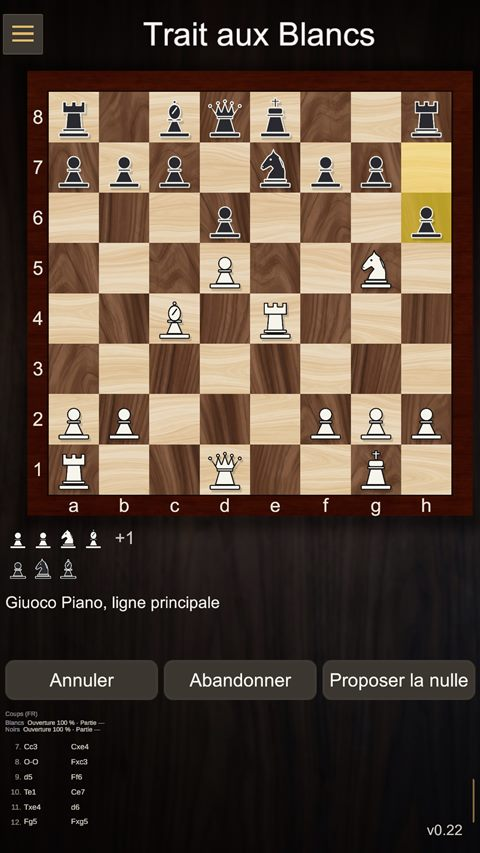
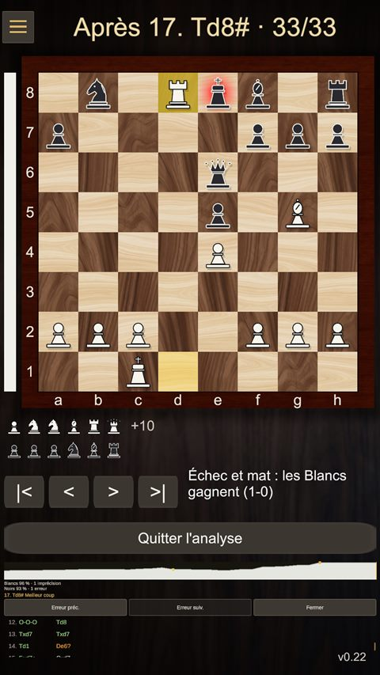
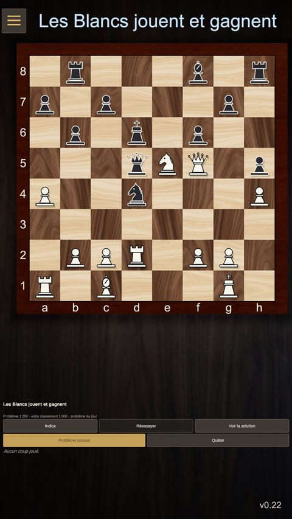

Un jeu d'échecs élégant et complet
The King's Square est un jeu d'échecs pour Android, pensé pour progresser à votre rythme. Installez-vous à une table en noyer, devant un plateau en bois, en marbre ou en ardoise, et jouez.



Ce que vous trouverez dans le jeu
- Contre l'ordinateur : cinq niveaux, de Débutant à Fort, même sans connexion Internet, avec la pendule de votre choix.
- Apprendre à jouer : 13 leçons courtes avec des exercices sur le plateau, de la marche des pièces au pat.
- Problèmes d'échecs : mats en 1, 2 ou 3, gains de matériel, et un nouveau problème du jour chaque jour.
- Entraînement aux ouvertures : 12 ouvertures classiques à rejouer coup par coup, avec l'idée de chaque coup.
- En ligne ou à deux : partagez le code d'une partie avec un ami, jouez sur le réseau local ou à deux sur le même écran.
- Pour progresser : revue de partie qui explique chaque erreur, courbe de l'avantage, précision et vue d'analyse.
- Succès et statistiques : 28 succès à débloquer, historique complet, statistiques par joueur, PGN et FEN.
- À votre goût : plusieurs thèmes de plateau et quatre styles de pièces, dont un style à contraste élevé.
Sans compte, sans publicité, sans pistage : vos parties et vos statistiques restent sur votre appareil.
Besoin d'aide ? Consultez l'aide et les questions fréquentes, écrivez-nous depuis la page Contact, ou lisez la politique de confidentialité.